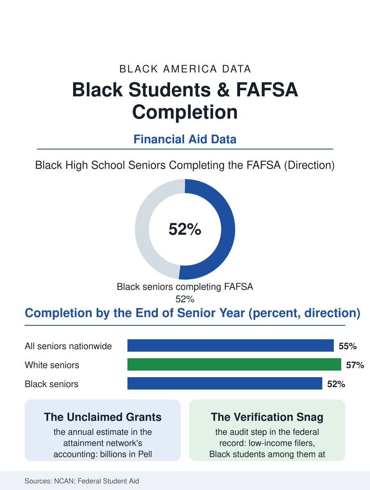

Black Education
The Form That Opens the Door: FAFSA Completion and Black Students
The federal aid form decides who can pay for college before any admissions letter arrives, and Black seniors complete it at lower rates, leaving grant money unclaimed every year. The form file.

Before any admissions decision, before any campus visit, one form quietly decides which American teenagers can pay for college: the Free Application for Federal Student Aid, the FAFSA. It unlocks Pell Grants, federal loans, work-study, and most state and institutional aid, and every year a meaningful share of Black high school seniors never file it, leaving grant money they had already earned by income eligibility sitting unclaimed in the federal ledger. This article reads the form file.
The Completion Gap
The National College Attainment Network tracks filings class by class, and its annual accounting shows overall completion hovering in the mid-fifties as a share of seniors, with Black students completing at rates several points below white students and below the national line. The gap is not a mystery of motivation; the same datasets show Black students expressing college intentions at rates equal to or higher than their peers. It is a gap of friction. The form asks for parental tax information in households where taxes may be filed by a preparer, a relative, or not at all; where the adult who raised the student is not the parent the form expects; where a family's finances run through cash work and shared housing that the form's categories fit poorly. Layered over the friction is information: first-generation students, a majority of Black college-goers, are the least likely to know that the form opens in the fall, that it is free, that filing early matters for state grants that run out, and that a family's low income is precisely the qualification, not a disqualification.
Where Filers Get Stuck
Completion is only the first gate. Federal data show that filers from low-income families are flagged for verification, an audit requiring documents to prove the income already reported, at rates far above affluent filers, and Black students sit inside that flagged population at elevated rates. A meaningful share of verified students never finish the verification, a melt the literature names plainly: students admitted, aided on paper, and lost to paperwork over the summer. The form's redesign in the mid-2020s shortened the application and automated tax transfer, and early completion analyses credited it with real gains, even as rollout errors in its first cycle delayed awards nationwide. States have answered with their own levers: a growing number require FAFSA completion as a condition of graduation, with opt-outs, and the early adopters' data show completion jumping fastest in high-poverty districts, evidence that the barrier was the default, not the student. Counselor ratios complete the picture: the advisors who shepherd filings serve caseloads in the hundreds in the schools Black students attend, against recommended ratios a fraction of that size.
What Filing Buys
The stakes are arithmetic. The maximum Pell Grant covers a large share of tuition at public four-year colleges and most of it at community colleges, and it is a grant, not a loan: the only money in the college finance system that asks nothing back. Analyses of unclaimed aid estimate the national total in the billions per graduating class, and because eligibility follows income, the unclaimed share maps closely onto the Black and low-income students the program was built for. Filing also compounds: state grants, institutional need aid, and emergency funds almost all key off the same form, so a single filing can stack three or four funding sources under one student. The completion campaigns that work share a design the data keep endorsing: filing help inside the school day rather than after it, tax documents gathered through trusted community partners, text-message follow-through across the summer melt, and verification treated as a shared project instead of a private audit. The form is short now. The file's conclusion is that the distance was never really the form's length; it was everything around the form, and everything around the form can be built.
The calendar adds one more quiet pressure the completion data record. Federal filing opens in the fall of senior year, and many state grant programs distribute funds in filing order until the money runs out, so the student who files in the spring is not merely late but rationed. Black seniors file later on average in the attainment network's monthly tracking, a lag that tracks the counselor caseloads and family tax timelines described above rather than any difference in ambition. The states that publish school-by-school completion dashboards have watched the same phenomenon repeat annually: the schools whose completion jumps are the schools where filing was scheduled, staffed, and celebrated like a season, with the form treated as a team sport. The lesson the file keeps teaching is that completion is a property of systems, and systems can be rebuilt faster than family circumstances can, which is why this particular gap is considered among the most closable in the entire aid record.
More in Black Education
Black Educational Attainment: High School Parity, the College Gap
About 89 percent of Black adults hold a high school diploma and one in four holds a bachelor's degree or higher — the attainment ladder, the college completion gap, and the generational trend.
Historically Black Colleges and Universities: Enrollment and Degrees
More than 100 HBCUs enroll roughly 290,000 students and award about one in six Black bachelor's degrees — an outsized share from a small sector. The federal education data.
Black College Enrollment: 2.4 Million Students
About 2.4 million Black students are enrolled in American colleges — nearly two-thirds of them women. The NCES enrollment data by sector, level, and trend.
Source: National College Attainment Network annual FAFSA completion analyses; U.S. Department of Education, Federal Student Aid application data.